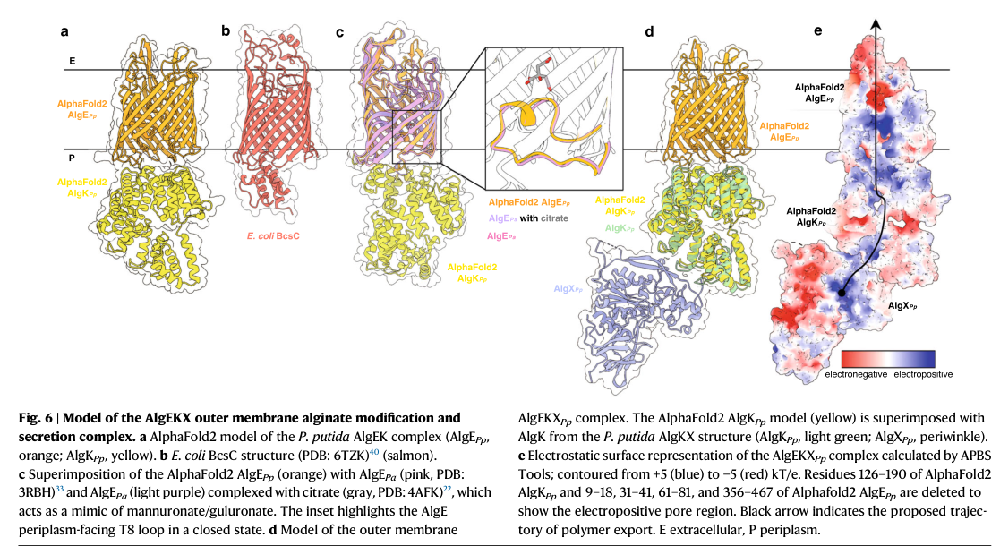

algK encodes an outer-membrane-anchored periplasmic lipoprotein of the alginate biosynthesis/export machinery. AlgK is a TPR/Sel1-like repeat scaffold protein (not a catalytic polymerase) that organizes the trans-envelope alginate secretion complex, connecting the outer-membrane export channel AlgE with the periplasmic modification enzyme AlgX and the inner-membrane polymerization module (Alg8/Alg44), and protecting nascent polymer from periplasmic degradation. KT2440-specific wet-lab data are lacking; function is inferred from the conserved AlgK family (chiefly P. aeruginosa) plus a P. putida AlgK-AlgX complex structure.
| GO Term | Evidence | Action | Reason |
|---|---|---|---|
|
GO:0009279
cell outer membrane
|
IEA
GO_REF:0000044 |
ACCEPT |
Summary: algK is correctly localized to the cell outer membrane.
Reason: AlgK is an outer-membrane/periplasmic-side alginate assembly factor, so the outer-membrane location is intrinsic to the core pathway role.
Supporting Evidence:
file:PSEPK/algK/algK-uniprot.txt
SUBCELLULAR LOCATION: Cell outer membrane
file:PSEPK/algK/algK-goa.tsv
GO:0009279 cell outer membrane
file:PSEPK/algK/algK-deep-research-falcon.md
Periplasmic, tethered to the **outer membrane** via N-terminal lipidation
file:PSEPK/algK/algK-deep-research-falcon.md
in vivo lipidation** was confirmed by palmitate labeling,
- AlgK localized to **outer-membrane–enriched fractions** by sucrose-gradient fractionation,
|
|
GO:0042121
alginic acid biosynthetic process
|
IEA
GO_REF:0000041 |
ACCEPT |
Summary: AlgK should retain the alginic acid biosynthetic process annotation as the correct parent process, but its role is as a non-catalytic scaffold within the synthase-dependent alginate export apparatus, not as the mannuronate polymerase.
Reason: UniProt places AlgK in the alginate biosynthesis pathway, which the falcon deep research corroborates by positioning AlgK in the trans-envelope alginate biosynthesis/export apparatus. The mechanistic literature (chiefly P. aeruginosa, plus a P. putida AlgK-AlgX complex structure) makes clear AlgK is a TPR/Sel1-like scaffold lipoprotein required for assembly/stability of the export machinery rather than the enzyme that polymerizes mannuronate (that activity is Alg8/Alg44). The UniProt "May be involved in the polymerization of mannuronate" statement is an ECO:0000250 by-similarity inference and should be read as pathway membership, not a demonstrated catalytic polymerase function. GO:0042121 is retained as the appropriate broad process; KT2440-specific experimental confirmation is still lacking.
Supporting Evidence:
file:PSEPK/algK/algK-uniprot.txt
May be involved in the polymerization of mannuronate to
file:PSEPK/algK/algK-uniprot.txt
PATHWAY: Glycan biosynthesis; alginate biosynthesis
file:PSEPK/algK/algK-goa.tsv
GO:0042121 alginic acid biosynthetic process
file:PSEPK/algK/algK-deep-research-falcon.md
AlgK functions within the **synthase-dependent alginate biosynthesis/export pathway**, in the trans-envelope apparatus spanning IM (Alg8/Alg44) → periplasm (AlgX/AlgG/AlgL etc.) → OM (AlgE).
file:PSEPK/algK/algK-deep-research-falcon.md
AlgK is not an enzyme catalyzing a chemical reaction; rather, it is a **non-catalytic assembly/scaffolding factor** essential for efficient alginate polymer production and export.
|
Q: Is the AlgK scaffold/conduit role characterized in P. aeruginosa (and the P. putida AlgK-AlgX complex structure) fully conserved in P. putida KT2440 (PP_1285), given that no KT2440-specific wet-lab study was found?
Q: Does P. putida AlgK organize the same AlgEKX outer-membrane complex in vivo, and is the AlgK-AlgX interface (AlgX N-terminus to AlgK TPRs 9-10) required for alginate export in KT2440?
Experiment: Generate a KT2440 algK deletion and complement strain and measure alginate polymer production, polymer molecular weight, and AlgE outer-membrane localization, testing whether loss of AlgK yields low-molecular-weight uronic acids and AlgE mislocalization as seen in P. aeruginosa.
Type: alginate production and AlgE localization assay
Experiment: Co-immunoprecipitation and/or in vitro reconstitution to confirm the AlgK-AlgX and AlgK-AlgE interactions in KT2440 and verify the trans-envelope secretion complex membership predicted by orthology.
Type: protein-protein interaction and complex-assembly assay
The research report should be a detailed narrative explaining the function, biological processes, and localization of the gene product. Citations should be given for all claims.
You should prioritize authoritative reviews and primary scientific literature when conducting research. You can supplement
this with annotations you find in gene/protein databases, but these can be outdated or inaccurate.
We are specifically interested in the primary function of the gene - for enzymes, what reaction is catalyzed, and what is the substrate specificity? For transporters, what is the substrate? For structural proteins or adapters, what is the broader structural role? For signaling molecules, what is the role in the pathway.
We are interested in where in or outside the cell the gene product carries out its function.
We are also interested in the signaling or biochemical pathways in which the gene functions. We are less interested in broad pleiotropic effects, except where these elucidate the precise role.
Include evidence where possible. We are interested in both experimental evidence as well as inference from structure, evolution, or bioinformatic analysis. Precise studies should be prioritized over high-throughput, where available.
The UniProt target (Q88NC7) is annotated as Alginate biosynthesis protein AlgK (precursor) from Pseudomonas putida KT2440 and belongs to the AlgK family with Sel1/TPR-like repeat domains. The core mechanistic literature for “AlgK” overwhelmingly comes from Pseudomonas aeruginosa, where AlgK is an outer-membrane (OM)–anchored, periplasmic TPR/Sel1-like repeat protein required for alginate export. The retrieved evidence base includes (i) direct P. aeruginosa genetic/biochemical evidence for AlgK function and localization, and (ii) a key AlgK–AlgX complex crystal structure solved using P. putida AlgK/AlgX proteins, providing direct P. putida evidence for at least one major interaction. However, no KT2440 (PP_1285/Q88NC7)-specific wet-lab paper was retrieved; therefore organism-specific statements for KT2440 are presented as orthology-based inference from the conserved AlgK family plus the UniProt-described identity, while explicitly distinguishing the organism contexts. (gheorghita2022structureofthe pages 8-9, keiski2010algkisa pages 1-2)
Alginate is a linear, anionic heteropolysaccharide composed of β-D-mannuronic acid (M) and α-L-guluronic acid (G) residues; monomer composition and polymer molecular weight strongly influence physical properties and applications. Bacteria such as Pseudomonas spp. produce alginate as an exopolysaccharide, and its biosynthesis involves (i) precursor synthesis, (ii) polymerization at the inner membrane, (iii) periplasmic modification, and (iv) export across the OM through a dedicated secretion complex. (serrato2024bacterialalginatebiosynthesis pages 8-11)
A major current concept is that alginate is made/exported by a multi-protein trans-envelope machine that coordinates polymerization, modification (e.g., acetylation/epimerization), and secretion across both membranes and the peptidoglycan (PG). A 2023 authoritative review emphasizes that understanding of these assemblies has advanced substantially due to a combination of solved structures and structure prediction (e.g., AlphaFold) used to build system-level models. (gheorghita2023pseudomonasaeruginosabiofilm pages 4-5, gheorghita2023pseudomonasaeruginosabiofilm pages 3-4)
Across Pseudomonas species, AlgK is best described as:
- a TPR/Sel1-like repeat-rich scaffold protein (protein–protein interaction module), and
- an OM-sorted periplasmic lipoprotein (N-terminal lipidation/outer-membrane tethering). (keiski2010structuralandfunctional pages 86-91, keiski2010structuralandfunctional pages 154-160)
In P. aeruginosa, crystal structure work showed AlgK forms a right-handed superhelix built from many TPR-like motifs (reported as ~9.5 TPR-like repeats in one structural study) and exhibits conformational flexibility consistent with a scaffolding function. (keiski2010structuralandfunctional pages 86-91)
AlgK is not an enzyme catalyzing a chemical reaction; rather, it is a non-catalytic assembly/scaffolding factor essential for efficient alginate polymer production and export. The dominant mechanistic definition in the literature is that AlgK:
- helps organize and stabilize a trans-periplasmic conduit/complex,
- connects the OM export channel (AlgE) with periplasmic modifying enzymes (notably AlgX) and IM polymerization components (Alg8/Alg44),
- and protects the nascent polymer from periplasmic degradation (AlgL) by enabling rapid/channeled transit through the periplasm. (keiski2010structuralandfunctional pages 102-107, serrato2024bacterialalginatebiosynthesis pages 8-11, gheorghita2023pseudomonasaeruginosabiofilm pages 4-5)
Direct biochemical evidence in P. aeruginosa supports AlgK as an OM-sorted lipoprotein:
- in vivo lipidation was confirmed by palmitate labeling,
- AlgK localized to outer-membrane–enriched fractions by sucrose-gradient fractionation,
- and an N-terminal signal peptide/lipobox consistent with lipoprotein maturation and OM sorting was described (including residues correlated with OM localization). (keiski2010structuralandfunctional pages 154-160)
Given the UniProt identity (precursor; AlgK family; Sel1/TPR-like domains) for Q88NC7, the most conservative KT2440 inference is that PP_1285 is likewise a periplasmic lipoprotein tethered at the OM, acting at the periplasm/OM interface in an alginate export apparatus, but KT2440-specific localization experiments were not found in the retrieved set.
AlgK–AlgE (outer-membrane porin/export channel): In P. aeruginosa, co-immunoprecipitation with AlgE-FLAG recovered AlgK, supporting an association; additionally, algK deletion caused AlgE mislocalization to both inner and outer membrane fractions instead of being exclusively OM-localized. This supports a role for AlgK in correct positioning/assembly of AlgE within the secretion machinery. (rehman2013insightsintothe pages 5-6, keiski2010structuralandfunctional pages 154-160)
AlgK–AlgX (periplasmic modifying enzyme): Evidence exists at two levels:
- In P. aeruginosa, AlgK-His pulldown copurified AlgX (while AlgE was not always recovered by that approach), supporting an AlgK–AlgX association in vivo/biochemically. (rehman2013insightsintothe pages 5-6)
- Critically, a 2.5 Å crystal structure of the AlgK–AlgX complex was solved using the Pseudomonas putida proteins, defining a direct interface (AlgX N-terminus with AlgK TPRs 9–10) and providing strong, direct evidence that P. putida AlgK is an AlgX-binding scaffold. (gheorghita2022structureofthe pages 8-9)
AlgK with Alg44/Alg8 (IM polymerase/coupling module): A mechanistic model supported by stability/interdependence experiments in P. aeruginosa indicates AlgK and AlgX contribute to stabilizing Alg44 and the polymerization machinery, consistent with a multi-protein unit spanning IM–periplasm–OM. (rehmanUnknownyearmolecularmechanismof pages 128-133)
Multiple lines of P. aeruginosa genetics converge on AlgK being essential for productive alginate synthesis/export:
- Deleting algK abolishes alginate production in assembly studies (alongside deletions of key secretion components). (rehman2013insightsintothe pages 5-6)
- In structural/functional studies, ΔalgK mutants fail to export high-molecular-weight alginate and instead show secretion of low-molecular-weight uronic acids interpreted as AlgL degradation products, consistent with failure to assemble a protected trans-envelope conduit. (keiski2010structuralandfunctional pages 102-107, keiski2010algkisa pages 4-6)
- A 2023 review reiterates that algK deletion phenocopies deletions of other “conduit” components (e.g., algX, algG) in yielding small uronic-acid products generated by AlgL, reinforcing the concept that a transenvelope complex is required for successful polymer export. (gheorghita2023pseudomonasaeruginosabiofilm pages 4-5)
A 2023 FEMS Microbiology Reviews article highlights that structural coverage of exopolysaccharide systems has grown markedly and that AlphaFold predictions combined with structural homology searches are now routinely used to infer architectures of secretion complexes. In this synthesis, AlgK is treated as a structurally characterized component of the alginate apparatus (with existing PDB structures) and is positioned within an integrated IM–PG–OM assembly model. (gheorghita2023pseudomonasaeruginosabiofilm pages 7-8, gheorghita2023pseudomonasaeruginosabiofilm pages 3-4)
The same 2023 review also emphasizes a broader conceptual development: TPR/TPR-like periplasmic scaffolds (AlgK-like proteins) are emerging as a conserved organizing theme across multiple synthase-dependent exopolysaccharide systems (alginate, Pel, PNAG, cellulose), enabling more generalizable mechanistic hypotheses and comparative modeling. (gheorghita2023pseudomonasaeruginosabiofilm pages 15-17)
A 2024 review chapter summarizes alginate biosynthetic steps and notes that while AlgK is consistently described as an OM-anchored periplasmic lipoprotein, its precise molecular function remains “not fully resolved” in some accounts, reflecting ongoing debates (e.g., whether AlgK primarily guides polymer, scaffolds enzymes, promotes AlgE biogenesis, or combines these roles). The chapter emphasizes the “protective guide” model: AlgK helps protect nascent polymer from periplasmic lyases such as AlgL, consistent with ΔalgK phenotypes producing free uronic acids/short fragments. (serrato2024bacterialalginatebiosynthesis pages 8-11)
In P. aeruginosa, alginate production is strongly linked to mucoidy and biofilm-associated persistence; therefore, AlgK and its protein–protein interfaces (e.g., AlgK–AlgX, AlgK–AlgE) are frequently discussed as potential weak points of the secretion apparatus. The 2023 review explicitly frames exopolysaccharide biosynthesis machines as multi-protein complexes whose components (including processing enzymes/lyases) have been “commandeered” for antimicrobial applications, reflecting a broader real-world driver for understanding AlgK-containing systems. (gheorghita2023pseudomonasaeruginosabiofilm pages 7-8)
Bacterial alginate production is pursued because tuning gene/protein functions and culture conditions can yield alginates with customized molecular weight and composition, influencing rheology and downstream use. While AlgK itself is not a modifier enzyme, mechanistic understanding of AlgK-mediated export (and its coupling to AlgX-mediated acetylation) is relevant to engineering strategies that aim to control polymer processing and secretion efficiency. (serrato2024bacterialalginatebiosynthesis pages 8-11)
Structural analyses have proposed that AlgK (TPR scaffold) together with AlgE (β-barrel) functions analogously to a two-part secretin-like system for exopolysaccharide export. This view is supported by: (i) extensive TPR-like motifs and conserved surface patches mapped as interaction sites, and (ii) phenotypes showing AlgE mislocalization or defective alginate export when AlgK is absent. (keiski2010structuralandfunctional pages 107-113, keiski2010structuralandfunctional pages 154-160)
A key expert-level advance is the interpretation of the AlgK–AlgX complex as a polymer-binding, electropositive conduit that physically couples AlgX’s modification activity to export through AlgE. The AlgKX complex was shown to bind alginate oligomers, and an integrative model places AlgK on AlgE such that the polymer can travel from AlgX’s active site toward the AlgE pore. This provides a coherent mechanistic explanation for why disrupting AlgK–AlgX interactions abolishes alginate production/biofilm attachment: polymer may be made but is degraded by AlgL if export is stalled. (gheorghita2022structureofthe pages 8-9, gheorghita2022structureofthe media 634d7ebe)
Because AlgK is a scaffolding protein, many “data” are structural/biophysical or phenotype-based rather than enzymatic kinetics.
Structural resolution: The AlgK–AlgX complex structure was solved at 2.5 Å resolution (crystal structure), defining the interaction surface and enabling integrative modeling of the AlgEKX OM complex. (gheorghita2022structureofthe pages 8-9)
Repeat architecture: One structural analysis described AlgK as containing ~9.5 TPR-like repeats, consistent with an extended interaction scaffold. (keiski2010structuralandfunctional pages 86-91)
Localization signal features: In P. aeruginosa, AlgK was reported to have a 27-residue signal sequence and an “unusual lipobox” (L-A-A-G-C) with residues at +2 to +4 correlated with OM sorting. (keiski2010structuralandfunctional pages 154-160)
Quantitative structural/comparative anchors from related systems: While not AlgK itself, the 2023 review provides quantitative values for analogous TPR-based secretion systems (e.g., Pel), including predicted 19 TPR motifs spanning ~200 Å for PelB and pore/oligomer dimensions for PelC (≈120 Å ring; ≈32 Å pore), supporting the general concept that TPR scaffolds form long periplasmic tracks for polymer handling. These numbers are useful for contextualizing AlgK-like proteins as long-range periplasmic scaffolds. (gheorghita2023pseudomonasaeruginosabiofilm pages 15-17)
Primary function (most defensible annotation): AlgK is a periplasmic TPR/Sel1-like repeat scaffold lipoprotein required for assembly/stability of the alginate modification/export machinery; it enables efficient export of high-molecular-weight alginate by organizing the AlgE OM porin with periplasmic modification components such as AlgX and coordinating with IM polymerization (Alg8/Alg44). (gheorghita2022structureofthe pages 8-9, gheorghita2023pseudomonasaeruginosabiofilm pages 4-5, rehman2013insightsintothe pages 5-6)
Cellular location: Periplasmic, tethered to the outer membrane via N-terminal lipidation (directly shown in P. aeruginosa; inferred for the conserved AlgK family member Q88NC7 based on “precursor” annotation and shared family/domain features). (keiski2010structuralandfunctional pages 154-160)
Key interaction partners: Strongest evidence supports direct/functional interaction with AlgX (direct complex structure in P. putida) and association with AlgE (supported in P. aeruginosa by co-IP and by AlgE mislocalization in ΔalgK). (gheorghita2022structureofthe pages 8-9, rehman2013insightsintothe pages 5-6, keiski2010structuralandfunctional pages 154-160)
Pathway: AlgK functions within the synthase-dependent alginate biosynthesis/export pathway, in the trans-envelope apparatus spanning IM (Alg8/Alg44) → periplasm (AlgX/AlgG/AlgL etc.) → OM (AlgE). (rehmanUnknownyearmolecularmechanismof pages 128-133, gheorghita2023pseudomonasaeruginosabiofilm pages 4-5)
| Claim (function/localization/interaction/phenotype) | Evidence summary | Organism context (P. putida vs P. aeruginosa) | Key citation (with year, journal) | URL/DOI |
|---|---|---|---|---|
| OM lipoprotein with TPR/Sel1-like repeats | AlgK is experimentally shown to be lipidated in vivo, localized to outer-membrane fractions, and to carry an N-terminal lipoprotein signal/lipobox; crystal structure shows a TPR-rich superhelical scaffold (~9.5 TPR-like repeats), supporting a periplasmic protein–protein interaction role (keiski2010algkisa pages 1-2, keiski2010structuralandfunctional pages 154-160, keiski2010structuralandfunctional pages 86-91) | Direct evidence: P. aeruginosa; inference to P. putida KT2440/Q88NC7 supported by conserved AlgK-family/domain annotation | Keiski et al., 2010, Structure; Keiski, 2010, thesis/structural study | https://doi.org/10.1016/j.str.2009.11.015 ; https://doi.org/10.1016/j.str.2009.11.015 |
| Interacts with AlgE | Co-immunoprecipitation with AlgE-FLAG recovered AlgK, and loss of algK causes AlgE mislocalization to both inner- and outer-membrane fractions, indicating AlgK helps position/stabilize the AlgE export porin within the secretion apparatus (rehman2013insightsintothe pages 5-6, keiski2010structuralandfunctional pages 154-160) | Direct evidence: P. aeruginosa | Rehman et al., 2013, Applied and Environmental Microbiology; Keiski et al., 2010, Structure | https://doi.org/10.1128/AEM.00460-13 ; https://doi.org/10.1016/j.str.2009.11.015 |
| Interacts with AlgX | Pulldown of AlgK-His copurified AlgX in vivo/in cell-envelope preparations; later crystallography solved a direct AlgK–AlgX complex at 2.5 Å and mapped the interface to the N-terminus of AlgX and TPRs 9–10 of AlgK (rehman2013insightsintothe pages 5-6, gheorghita2022structureofthe pages 8-9) | Interaction detected in P. aeruginosa; direct 2.5 Å complex structure reported for P. putida proteins | Rehman et al., 2013, Applied and Environmental Microbiology; Gheorghita et al., 2022, Nature Communications | https://doi.org/10.1128/AEM.00460-13 ; https://doi.org/10.1038/s41467-022-35131-6 |
| Required for high-molecular-weight alginate secretion | algK deletion abolishes or severely impairs alginate production/secretion; classical phenotypes include non-mucoidy and failure to recover high-molecular-weight polymer, consistent with AlgK being a required scaffold in synthase-dependent export (rehman2013insightsintothe pages 5-6, keiski2010algkisa pages 4-6) | Direct evidence: P. aeruginosa; applied by homology to P. putida AlgK family member Q88NC7 with caution | Rehman et al., 2013, Applied and Environmental Microbiology; Keiski et al., 2010, Structure | https://doi.org/10.1128/AEM.00460-13 ; https://doi.org/10.1016/j.str.2009.11.015 |
| Deletion leads to AlgL degradation products / short uronic acids | In algK mutants, nascent alginate is exposed to periplasmic alginate lyase AlgL, producing low-molecular-weight uronic acids instead of protected/exported polymer; this is a key functional signature of failed trans-envelope complex assembly (keiski2010structuralandfunctional pages 102-107, gheorghita2023pseudomonasaeruginosabiofilm pages 4-5, serrato2024bacterialalginatebiosynthesis pages 8-11) | Direct evidence: P. aeruginosa; mechanistic inference for P. putida homolog | Keiski et al., 2010, structural/functional study; Gheorghita et al., 2023, FEMS Microbiology Reviews; Serrato, 2024, Biochemistry chapter | https://doi.org/10.1016/j.str.2009.11.015 ; https://doi.org/10.1093/femsre/fuad060 ; https://doi.org/10.5772/intechopen.109295 |
| Proposed scaffold linking IM polymerase to OM export | Current model places AlgK as an OM-anchored periplasmic scaffold that helps connect Alg8/Alg44 polymerization at the inner membrane with AlgX-mediated periplasmic processing and AlgE-mediated outer-membrane export; mutual stability data also link AlgK with Alg44/AlgX (rehmanUnknownyearmolecularmechanismof pages 128-133, serrato2024bacterialalginatebiosynthesis pages 8-11) | Mostly direct in P. aeruginosa; family-wide model relevant to P. putida AlgK | Rehman dissertation excerpt; Serrato, 2024, Biochemistry chapter | https://doi.org/10.5772/intechopen.109295 |
| AlgK–AlgX complex binds alginate oligomers and supports export model | The 2.5 Å AlgK–AlgX structure and glycan-binding experiments showed AlgK/AlgKX bind alginate oligomers (polyM/polyMG), supporting a chaperone/conduit role for polymer transfer toward AlgE; disruption of the AlgK–AlgX interaction abolishes alginate production and biofilm attachment (gheorghita2022structureofthe pages 8-9) | Direct structural evidence: P. putida proteins used for complex structure; functional interpretation in P. aeruginosa system | Gheorghita et al., 2022, Nature Communications | https://doi.org/10.1038/s41467-022-35131-6 |
| Proposed AlgEKX outer-membrane modification/secretion complex | Integrative structural modeling places AlgK on AlgE to create an electropositive conduit from the AlgX active site to the AlgE pore, rationalizing how modification and export are physically coupled across the periplasm/outer membrane (gheorghita2022structureofthe pages 8-9, gheorghita2022structureofthe media 634d7ebe) | Model integrates direct structural work on P. putida AlgKX with P. aeruginosa pathway biology | Gheorghita et al., 2022, Nature Communications | https://doi.org/10.1038/s41467-022-35131-6 |
Table: This table summarizes the strongest functional-annotation evidence for AlgK (UniProt Q88NC7), separating direct findings from Pseudomonas aeruginosa and P. putida structural evidence. It highlights localization, interaction partners, mutant phenotypes, and the current structural model for alginate export.
The retrieved figures from Nature Communications (2022) depict the AlgK–AlgX complex and a proposed AlgE–AlgK–AlgX outer-membrane modification/secretion complex model that directly supports the “periplasmic scaffold/conduit” interpretation of AlgK family proteins. (gheorghita2022structureofthe media 634d7ebe, gheorghita2022structureofthe media bf0a533e)
References
(gheorghita2022structureofthe pages 8-9): Andreea A. Gheorghita, Yancheng E. Li, Elena N. Kitova, Duong T. Bui, Roland Pfoh, Kristin E. Low, Gregory B. Whitfield, Marthe T. C. Walvoort, Qingju Zhang, Jeroen D. C. Codée, John S. Klassen, and P. Lynne Howell. Structure of the algkx modification and secretion complex required for alginate production and biofilm attachment in pseudomonas aeruginosa. Nature Communications, Dec 2022. URL: https://doi.org/10.1038/s41467-022-35131-6, doi:10.1038/s41467-022-35131-6. This article has 40 citations and is from a highest quality peer-reviewed journal.
(keiski2010algkisa pages 1-2): Carrie-Lynn Keiski, Michael Harwich, Sumita Jain, Ana Mirela Neculai, Patrick Yip, Howard Robinson, John C. Whitney, Laura Riley, Lori L. Burrows, Dennis E. Ohman, and P. Lynne Howell. Algk is a tpr-containing protein and the periplasmic component of a novel exopolysaccharide secretin. Structure, 18 2:265-73, Feb 2010. URL: https://doi.org/10.1016/j.str.2009.11.015, doi:10.1016/j.str.2009.11.015. This article has 158 citations and is from a domain leading peer-reviewed journal.
(serrato2024bacterialalginatebiosynthesis pages 8-11): Rodrigo Vassoler Serrato. Bacterial alginate biosynthesis and metabolism. Biochemistry, May 2024. URL: https://doi.org/10.5772/intechopen.109295, doi:10.5772/intechopen.109295. This article has 6 citations and is from a peer-reviewed journal.
(gheorghita2023pseudomonasaeruginosabiofilm pages 4-5): Andreea A Gheorghita, Daniel J Wozniak, Matthew R Parsek, and P Lynne Howell. Pseudomonas aeruginosa biofilm exopolysaccharides: assembly, function, and degradation. FEMS microbiology reviews, Oct 2023. URL: https://doi.org/10.1093/femsre/fuad060, doi:10.1093/femsre/fuad060. This article has 91 citations and is from a domain leading peer-reviewed journal.
(gheorghita2023pseudomonasaeruginosabiofilm pages 3-4): Andreea A Gheorghita, Daniel J Wozniak, Matthew R Parsek, and P Lynne Howell. Pseudomonas aeruginosa biofilm exopolysaccharides: assembly, function, and degradation. FEMS microbiology reviews, Oct 2023. URL: https://doi.org/10.1093/femsre/fuad060, doi:10.1093/femsre/fuad060. This article has 91 citations and is from a domain leading peer-reviewed journal.
(keiski2010structuralandfunctional pages 86-91): CL Keiski. Structural and functional studies of algk: a protein required for the secretion of high-molecular weight alginate in pseudomonas aeruginosa. Unknown journal, 2010.
(keiski2010structuralandfunctional pages 154-160): CL Keiski. Structural and functional studies of algk: a protein required for the secretion of high-molecular weight alginate in pseudomonas aeruginosa. Unknown journal, 2010.
(keiski2010structuralandfunctional pages 102-107): CL Keiski. Structural and functional studies of algk: a protein required for the secretion of high-molecular weight alginate in pseudomonas aeruginosa. Unknown journal, 2010.
(rehman2013insightsintothe pages 5-6): Zahid U. Rehman, Yajie Wang, M. Fata Moradali, Iain D. Hay, and Bernd H. A. Rehm. Insights into the assembly of the alginate biosynthesis machinery in pseudomonas aeruginosa. Applied and Environmental Microbiology, 79:3264-3272, May 2013. URL: https://doi.org/10.1128/aem.00460-13, doi:10.1128/aem.00460-13. This article has 73 citations and is from a peer-reviewed journal.
(rehmanUnknownyearmolecularmechanismof pages 128-133): Z ur Rehman. Molecular mechanism of export of alginate in pseudomonas aeruginosa. Unknown journal, Unknown year.
(keiski2010algkisa pages 4-6): Carrie-Lynn Keiski, Michael Harwich, Sumita Jain, Ana Mirela Neculai, Patrick Yip, Howard Robinson, John C. Whitney, Laura Riley, Lori L. Burrows, Dennis E. Ohman, and P. Lynne Howell. Algk is a tpr-containing protein and the periplasmic component of a novel exopolysaccharide secretin. Structure, 18 2:265-73, Feb 2010. URL: https://doi.org/10.1016/j.str.2009.11.015, doi:10.1016/j.str.2009.11.015. This article has 158 citations and is from a domain leading peer-reviewed journal.
(gheorghita2023pseudomonasaeruginosabiofilm pages 7-8): Andreea A Gheorghita, Daniel J Wozniak, Matthew R Parsek, and P Lynne Howell. Pseudomonas aeruginosa biofilm exopolysaccharides: assembly, function, and degradation. FEMS microbiology reviews, Oct 2023. URL: https://doi.org/10.1093/femsre/fuad060, doi:10.1093/femsre/fuad060. This article has 91 citations and is from a domain leading peer-reviewed journal.
(gheorghita2023pseudomonasaeruginosabiofilm pages 15-17): Andreea A Gheorghita, Daniel J Wozniak, Matthew R Parsek, and P Lynne Howell. Pseudomonas aeruginosa biofilm exopolysaccharides: assembly, function, and degradation. FEMS microbiology reviews, Oct 2023. URL: https://doi.org/10.1093/femsre/fuad060, doi:10.1093/femsre/fuad060. This article has 91 citations and is from a domain leading peer-reviewed journal.
(keiski2010structuralandfunctional pages 107-113): CL Keiski. Structural and functional studies of algk: a protein required for the secretion of high-molecular weight alginate in pseudomonas aeruginosa. Unknown journal, 2010.
(gheorghita2022structureofthe media 634d7ebe): Andreea A. Gheorghita, Yancheng E. Li, Elena N. Kitova, Duong T. Bui, Roland Pfoh, Kristin E. Low, Gregory B. Whitfield, Marthe T. C. Walvoort, Qingju Zhang, Jeroen D. C. Codée, John S. Klassen, and P. Lynne Howell. Structure of the algkx modification and secretion complex required for alginate production and biofilm attachment in pseudomonas aeruginosa. Nature Communications, Dec 2022. URL: https://doi.org/10.1038/s41467-022-35131-6, doi:10.1038/s41467-022-35131-6. This article has 40 citations and is from a highest quality peer-reviewed journal.
(gheorghita2022structureofthe media bf0a533e): Andreea A. Gheorghita, Yancheng E. Li, Elena N. Kitova, Duong T. Bui, Roland Pfoh, Kristin E. Low, Gregory B. Whitfield, Marthe T. C. Walvoort, Qingju Zhang, Jeroen D. C. Codée, John S. Klassen, and P. Lynne Howell. Structure of the algkx modification and secretion complex required for alginate production and biofilm attachment in pseudomonas aeruginosa. Nature Communications, Dec 2022. URL: https://doi.org/10.1038/s41467-022-35131-6, doi:10.1038/s41467-022-35131-6. This article has 40 citations and is from a highest quality peer-reviewed journal.

id: Q88NC7
gene_symbol: algK
product_type: PROTEIN
status: DRAFT
taxon:
id: NCBITaxon:160488
label: Pseudomonas putida (strain ATCC 47054 / DSM 6125 / CFBP 8728 / NCIMB 11950 / KT2440)
description: algK encodes an outer-membrane-anchored periplasmic lipoprotein of the alginate biosynthesis/export machinery.
AlgK is a TPR/Sel1-like repeat scaffold protein (not a catalytic polymerase) that organizes the trans-envelope alginate
secretion complex, connecting the outer-membrane export channel AlgE with the periplasmic modification enzyme AlgX and the
inner-membrane polymerization module (Alg8/Alg44), and protecting nascent polymer from periplasmic degradation. KT2440-specific
wet-lab data are lacking; function is inferred from the conserved AlgK family (chiefly P. aeruginosa) plus a P. putida AlgK-AlgX
complex structure.
existing_annotations:
- term:
id: GO:0009279
label: cell outer membrane
evidence_type: IEA
original_reference_id: GO_REF:0000044
review:
summary: algK is correctly localized to the cell outer membrane.
action: ACCEPT
reason: AlgK is an outer-membrane/periplasmic-side alginate assembly factor, so the outer-membrane location is intrinsic
to the core pathway role.
supported_by:
- reference_id: file:PSEPK/algK/algK-uniprot.txt
supporting_text: 'SUBCELLULAR LOCATION: Cell outer membrane'
- reference_id: file:PSEPK/algK/algK-goa.tsv
supporting_text: "GO:0009279\tcell outer membrane"
- reference_id: file:PSEPK/algK/algK-deep-research-falcon.md
supporting_text: |-
Periplasmic, tethered to the **outer membrane** via N-terminal lipidation
- reference_id: file:PSEPK/algK/algK-deep-research-falcon.md
supporting_text: |-
in vivo lipidation** was confirmed by palmitate labeling,
- AlgK localized to **outer-membrane–enriched fractions** by sucrose-gradient fractionation,
- term:
id: GO:0042121
label: alginic acid biosynthetic process
evidence_type: IEA
original_reference_id: GO_REF:0000041
review:
summary: AlgK should retain the alginic acid biosynthetic process annotation as the correct parent process, but its role
is as a non-catalytic scaffold within the synthase-dependent alginate export apparatus, not as the mannuronate polymerase.
action: ACCEPT
reason: UniProt places AlgK in the alginate biosynthesis pathway, which the falcon deep research corroborates by positioning
AlgK in the trans-envelope alginate biosynthesis/export apparatus. The mechanistic literature (chiefly P. aeruginosa,
plus a P. putida AlgK-AlgX complex structure) makes clear AlgK is a TPR/Sel1-like scaffold lipoprotein required for
assembly/stability of the export machinery rather than the enzyme that polymerizes mannuronate (that activity is Alg8/Alg44).
The UniProt "May be involved in the polymerization of mannuronate" statement is an ECO:0000250 by-similarity inference and
should be read as pathway membership, not a demonstrated catalytic polymerase function. GO:0042121 is retained as the
appropriate broad process; KT2440-specific experimental confirmation is still lacking.
supported_by:
- reference_id: file:PSEPK/algK/algK-uniprot.txt
supporting_text: May be involved in the polymerization of mannuronate to
- reference_id: file:PSEPK/algK/algK-uniprot.txt
supporting_text: 'PATHWAY: Glycan biosynthesis; alginate biosynthesis'
- reference_id: file:PSEPK/algK/algK-goa.tsv
supporting_text: "GO:0042121\talginic acid biosynthetic process"
- reference_id: file:PSEPK/algK/algK-deep-research-falcon.md
supporting_text: |-
AlgK functions within the **synthase-dependent alginate biosynthesis/export pathway**, in the trans-envelope apparatus spanning IM (Alg8/Alg44) → periplasm (AlgX/AlgG/AlgL etc.) → OM (AlgE).
- reference_id: file:PSEPK/algK/algK-deep-research-falcon.md
supporting_text: |-
AlgK is not an enzyme catalyzing a chemical reaction; rather, it is a **non-catalytic assembly/scaffolding factor** essential for efficient alginate polymer production and export.
references:
- id: GO_REF:0000041
title: Gene Ontology annotation based on UniPathway vocabulary mapping
findings:
- statement: UniPathway mapping supplies the alginic acid biosynthetic process annotation.
- id: GO_REF:0000044
title: Gene Ontology annotation based on UniProtKB/Swiss-Prot Subcellular Location vocabulary mapping
findings:
- statement: UniProt subcellular-location mapping supplies the cell outer membrane annotation.
- id: file:PSEPK/algK/algK-uniprot.txt
title: UniProtKB reviewed entry for algK
findings:
- statement: UniProt describes AlgK as an AlgK-family outer-membrane/periplasmic-side protein involved in alginate biosynthesis.
- id: file:PSEPK/algK/algK-goa.tsv
title: QuickGO GOA annotations for algK
findings:
- statement: The fetched GOA table contains the annotations reviewed for algK.
- id: file:interpro/panther/PTHR11102/PTHR11102-metadata.yaml
title: PANTHER family metadata for algK
findings:
- statement: The PANTHER family assignment is broad and not used as primary evidence because the reviewed UniProt entry
provides the alginate-specific function.
- id: file:PSEPK/algK/algK-deep-research-falcon.md
title: Falcon (Edison Scientific) deep research report on algK (Q88NC7 / PP_1285) in Pseudomonas putida KT2440
findings:
- statement: AlgK is an outer-membrane-anchored periplasmic TPR/Sel1-like repeat scaffold protein required for alginate
export.
reference_section_type: OTHER
supporting_text: |-
AlgK is an outer-membrane (OM)–anchored, periplasmic TPR/Sel1-like repeat protein
- statement: AlgK is a non-catalytic assembly/scaffolding factor, not an enzyme; it is essential for efficient alginate
polymer production and export.
reference_section_type: OTHER
supporting_text: |-
AlgK is not an enzyme catalyzing a chemical reaction; rather, it is a **non-catalytic assembly/scaffolding factor** essential for efficient alginate polymer production and export.
- statement: AlgK connects the OM export channel AlgE with periplasmic modifying enzyme AlgX and the inner-membrane
polymerization components Alg8/Alg44.
reference_section_type: OTHER
supporting_text: |-
connects the OM export channel (AlgE) with periplasmic modifying enzymes (notably AlgX) and IM polymerization components (Alg8/Alg44)
- statement: A 2.5 A crystal structure of the AlgK-AlgX complex was solved using P. putida proteins, providing direct
P. putida evidence for the AlgK-AlgX scaffold interface.
reference_section_type: OTHER
supporting_text: |-
a **2.5 Å crystal structure of the AlgK–AlgX complex** was solved using the *Pseudomonas putida* proteins, defining a direct interface (AlgX N-terminus with AlgK TPRs 9–10)
- statement: AlgK is tethered to the outer membrane via N-terminal lipidation, confirmed by in vivo palmitate labeling
and outer-membrane fractionation in P. aeruginosa.
reference_section_type: OTHER
supporting_text: |-
in vivo lipidation** was confirmed by palmitate labeling,
- AlgK localized to **outer-membrane–enriched fractions** by sucrose-gradient fractionation,
- statement: Loss of algK causes AlgE mislocalization, indicating AlgK positions/stabilizes the AlgE export porin in the
secretion machinery.
reference_section_type: OTHER
supporting_text: |-
algK deletion caused **AlgE mislocalization** to both inner and outer membrane fractions instead of being exclusively OM-localized
- statement: algK deletion mutants fail to export high-molecular-weight alginate and instead secrete low-molecular-weight
uronic acids (AlgL degradation products).
reference_section_type: OTHER
supporting_text: |-
ΔalgK mutants fail to export high-molecular-weight alginate** and instead show secretion of **low-molecular-weight uronic acids**
- statement: No KT2440 (PP_1285/Q88NC7)-specific wet-lab paper was retrieved; KT2440 function is inferred by orthology
from the conserved AlgK family.
reference_section_type: OTHER
supporting_text: |-
no KT2440 (PP_1285/Q88NC7)-specific wet-lab paper** was retrieved
core_functions:
- description: Outer-membrane-anchored periplasmic TPR/Sel1-like repeat scaffold lipoprotein of the synthase-dependent alginate
biosynthesis/export apparatus. AlgK is non-catalytic; it organizes and stabilizes the trans-envelope secretion complex,
physically coupling the AlgE outer-membrane export channel to the periplasmic modification enzyme AlgX and to the inner-membrane
polymerization module (Alg8/Alg44), thereby enabling efficient export of high-molecular-weight alginate.
directly_involved_in:
- id: GO:0042121
label: alginic acid biosynthetic process
locations:
- id: GO:0009279
label: cell outer membrane
supported_by:
- reference_id: file:PSEPK/algK/algK-uniprot.txt
supporting_text: 'PATHWAY: Glycan biosynthesis; alginate biosynthesis'
- reference_id: file:PSEPK/algK/algK-deep-research-falcon.md
supporting_text: |-
AlgK is a **periplasmic TPR/Sel1-like repeat scaffold lipoprotein** required for assembly/stability of the alginate modification/export machinery
- reference_id: file:PSEPK/algK/algK-deep-research-falcon.md
supporting_text: |-
connects the OM export channel (AlgE) with periplasmic modifying enzymes (notably AlgX) and IM polymerization components (Alg8/Alg44)
proposed_new_terms: []
suggested_questions:
- question: Is the AlgK scaffold/conduit role characterized in P. aeruginosa (and the P. putida AlgK-AlgX complex structure)
fully conserved in P. putida KT2440 (PP_1285), given that no KT2440-specific wet-lab study was found?
- question: Does P. putida AlgK organize the same AlgEKX outer-membrane complex in vivo, and is the AlgK-AlgX interface
(AlgX N-terminus to AlgK TPRs 9-10) required for alginate export in KT2440?
suggested_experiments:
- description: Generate a KT2440 algK deletion and complement strain and measure alginate polymer production, polymer molecular
weight, and AlgE outer-membrane localization, testing whether loss of AlgK yields low-molecular-weight uronic acids and
AlgE mislocalization as seen in P. aeruginosa.
experiment_type: alginate production and AlgE localization assay
- description: Co-immunoprecipitation and/or in vitro reconstitution to confirm the AlgK-AlgX and AlgK-AlgE interactions in
KT2440 and verify the trans-envelope secretion complex membership predicted by orthology.
experiment_type: protein-protein interaction and complex-assembly assay
{kind=link}